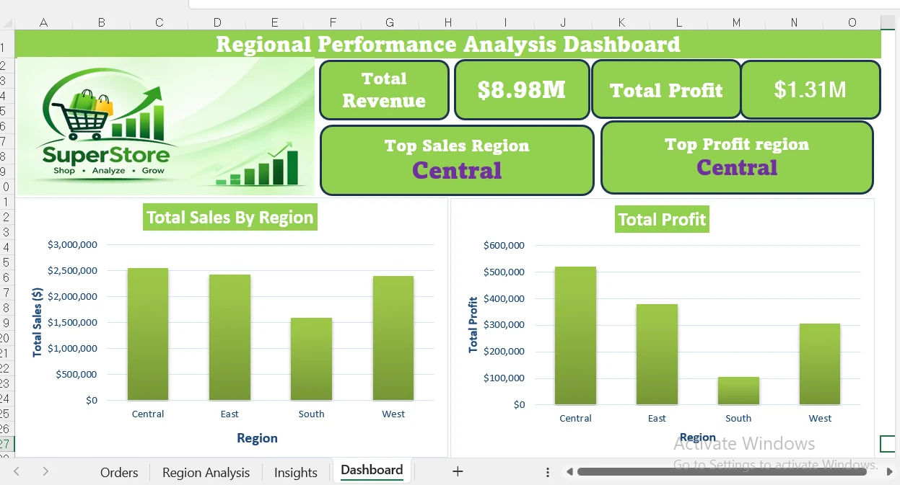
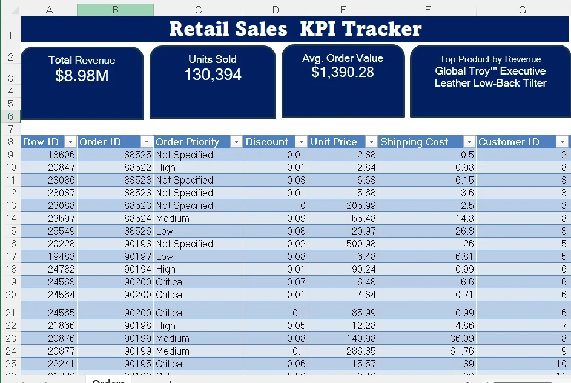
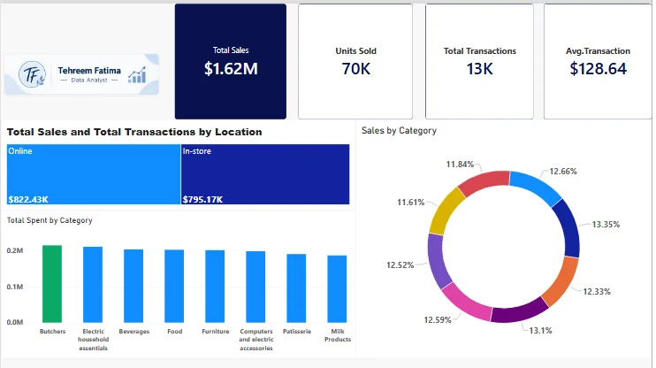
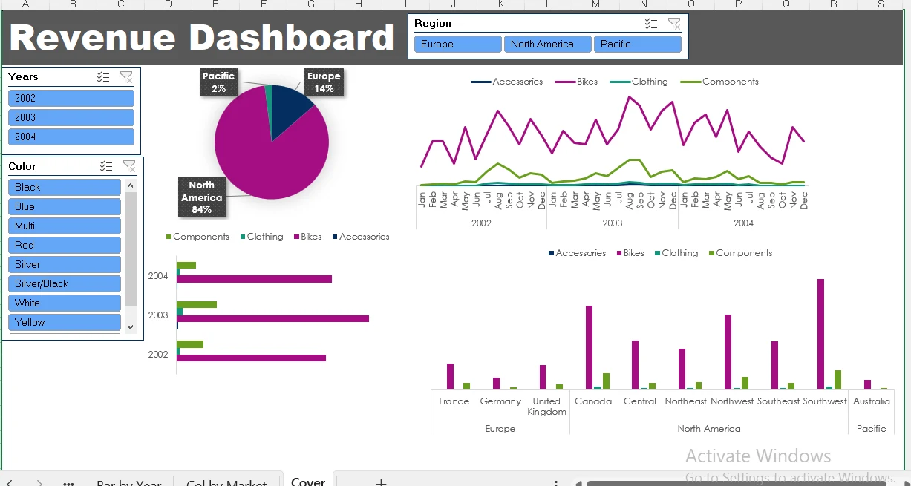
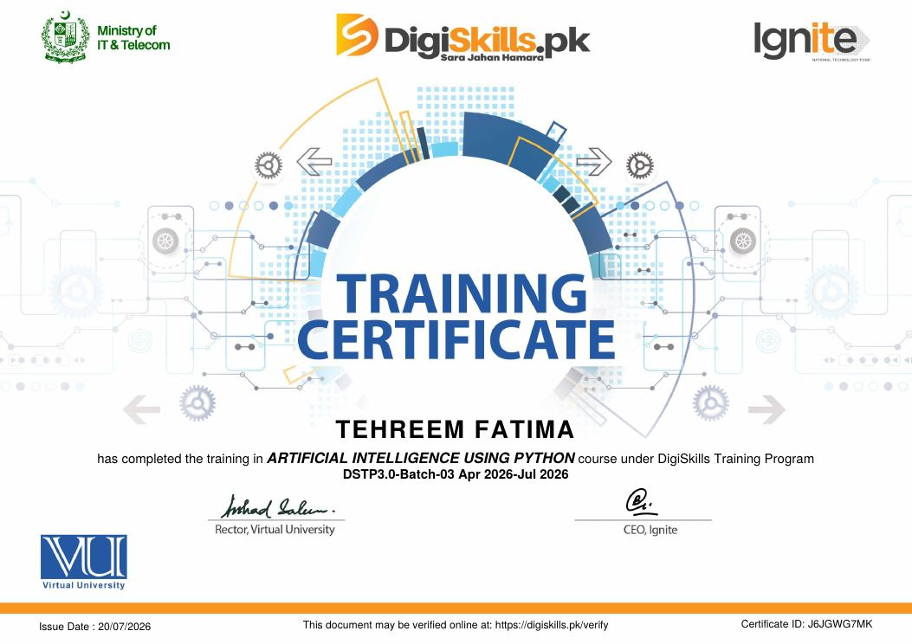
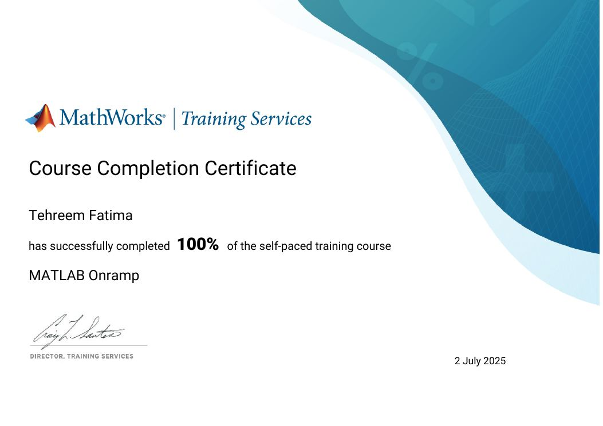
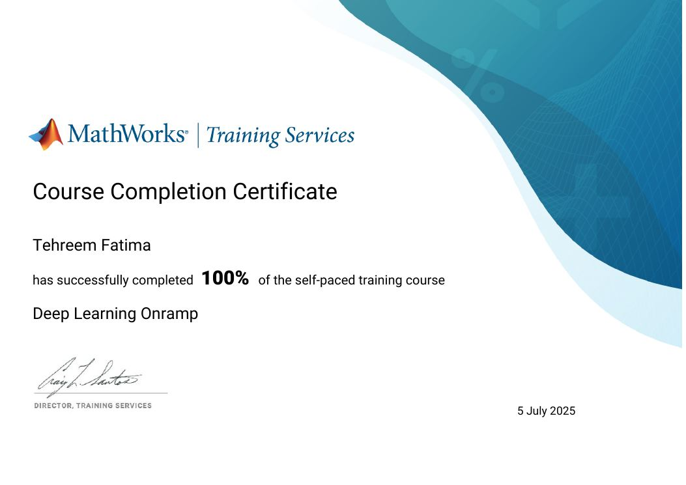

Python
Pandas NumPy Matplotlib Seaborn Scikit-learn basics Jupyter Notebook
BS Mathematics · Data Analytics
I’m Tehreem Fatima, a BS Mathematics student at BZU Multan working towards a career as a Data Analyst.
I clean data in Python, track KPIs in Excel and build dashboards in Power BI.
“Hello, I am Tehreem…” — plays only when you tap.
About
I’m studying BS Mathematics with a specialisation in Applied Mathematics at Bahauddin Zakariya University, Multan. Statistics and analytical thinking from my degree are the base for the data work I do on my own.
Alongside my studies I complete DigiSkills and MathWorks training, publish projects on GitHub and Kaggle, and since October 2026 I’ve been a Data Analytics Intern at VEDA Technology, working on data cleaning, exploratory analysis and KPI tracking.
Skills
Grouped by the tools I use for each stage of an analysis.
Pandas NumPy Matplotlib Seaborn Scikit-learn basics Jupyter Notebook
Querying Filtering Joins Aggregation
Formulas Lookups Sorting & filtering Pivot tables Charts KPI sheets
Dashboards KPI cards Slicers Charts Power Query
Projects
Each project lists the problem, the data, my approach and what I found. Click a screenshot to enlarge it.




Certificates & achievements
Select a certificate to open the original PDF. DigiSkills certificates can be verified at digiskills.pk/verify.



Achievement: Kaggle Python Coder Badge, plus Kaggle Learn courses in Python, data analysis and machine learning — see my Kaggle profile.
Education
2025 — Present
Bahauddin Zakariya University (BZU), Multan
Undergraduate degree in Mathematics with a specialization in Applied Mathematics, developing the statistical and analytical skills that underpin data analytics and machine learning.
Specialization: Applied Mathematics
Session 2022 — 2024
Government Associate Degree College (W), Kacha Khuh
Associate degree with Mathematics as the subject, building the core mathematical grounding later carried into the BS programme.
Subject: Mathematics
Career goals
My main goal: to solve real business problems with data — not just produce charts, but find the insight that changes a decision.
Blog
Short reads from my learning journey, also published on Blogger.
Data analytics means asking questions of data — and getting answers you can act on. It starts with collecting the right data, cleaning it, exploring it, and finally presenting what you found.
Think of a shop owner at the end of the month. She has hundreds of bills but still cannot say which product earns the most, or which day of the week is busiest. The answers are inside her own records — analytics is the work of bringing them out.
The process has a rhythm: collect the data, clean it (fix spelling mistakes, missing values and duplicates), explore it with charts and summaries, then model or summarise it into a decision. Tools change — Excel, SQL, Python, Power BI — but the thinking stays the same.
That is why I study it: not for the charts themselves, but for the moment a business owner looks at a clean dashboard and says, “Now I understand my business.”
Power BI turns plain tables into interactive dashboards. If you know Excel, you already understand half of it — here is the simple path I followed as a beginner.
Start with one clean table: one row per sale, with columns like Date, Product, Region and Amount. In Power BI Desktop, use “Get Data” to load it, then check each column's type in Power Query — dates as dates, amounts as numbers.
Next, build three visuals: a bar chart of sales by product, a line chart of sales by month, and a card showing total sales. Add a slicer for Region, and your static table becomes a dashboard you can explore with clicks.
My beginner tips: keep one question per page, use few colours with one highlight colour, and always label your charts. A simple dashboard that answers a real question beats a fancy one that answers nothing.
Real data is messy: missing values, duplicates, mixed formats. Python's Pandas library makes cleaning it systematic — here is the routine I use on every dataset.
First, I look before I touch: df.head(), df.info() and df.describe() tell me the shape of the data, the types of each column, and where the gaps are.
Then the cleaning itself: drop exact duplicates with drop_duplicates(), handle missing values with fillna() or by dropping rows — a decision that depends on the question — standardise text with str.strip() and str.lower(), and convert columns to proper dates and numbers.
Finally, I check again: row counts before and after, and a quick chart to spot anything strange. Clean data is not glamorous work, but every good insight I have ever found started there.
Contact
Open to data analytics internships and freelance projects. Send a message or find me on these profiles.